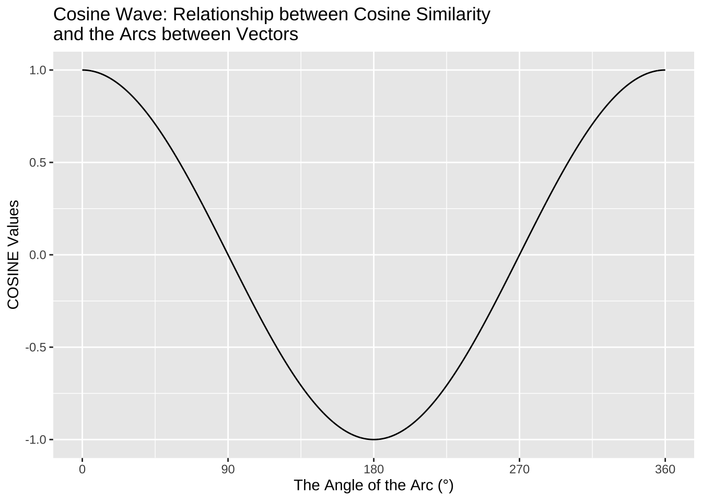

Chapter 14 Final Exam
14.1 Important Instructions
- The final exam consists of three parts:
- Part I: BNC2014 XML Processing
- Part II: NCCU Corpus Analysis
- Part III: Mandarin Song Lyrics Analysis
- The final exam requires the following three datasets from our dropbox drive. Please make sure that all these necessary files are properly downloaded and saved in your
working_directory/demo_data/:demo_data/corp-bnc-spoken2014-sample/demo_data/corp-NCCU-SPOKEN.tar.gzdemo_data/data-chinese-songs-mojim-exam.csv
There are 12 questions in this final exam. The total grade of the final exam is 120%, i.e., 10% for each exercise.
Your submitted R script should follow the exact same format as your previously submitted assignments. Namely, you need to indicate clearly which parts of the codes respond to which exam question. Please clearly specify the exercise number.
Please note that your submitted script will be evaluated by sourcing the entire script in the working directory (i.e., a directory with the
demo_datafolder containing all necessary data files). It is suggested that you re-start your R session and run the entire R script again before submission.Asking others to write the code for you is ABSOLUTELY forbidden. You must work on the questions independently. That is, you cannot discuss the solutions with the other peers.
Please submit your R script by: 12:20, Tues., June 16, 2020 via Moodle.
Name your script as follows:
final-alvin.R(use your own name in the filename).Although sample answers are always provided for each exercise, results may vary depending on the parameters and settings you choose in the data processing. Therefore, it is NOT required for you to produce exactly the same results. Rather, your codes will be evaluated comprehensively in terms of whether you have achieved the goal in a reasonable and comprehensive way. That being said, results that are very different from the ones provided below would be a concern.
14.2 Part I: BNC2014 XML Processing
Exercise 14.1 Please load all the BNC2014 corpus files included in demo_data/corp-bnc-spoken2014-sample/ and create a word-based data frame of the BNC2014 corpus. For each token, please extract relevant annotations from the XML files as shown in the sample data frame provided below.
- Please include all tokens that are the immediate children nodes of
<u>, including both word and non-word tokens - Please include both the utterence-level annotations as well as token-level annotations in the final data frame
- You may decide how to deal with
<unclear>tokens (cf. the 233rd utterance inS2A5-tdg.xmlbelow)
- A sample of the word-based data frame for
S2A5-tdg.xml:
- The size of the entire word-based data frame: 334352 rows and 12 columns
14.3 Part II: NCCU Corpus Analysis
Exercise 14.2 In this exercise, we will test a very simple hypothesis for the relative positions of two discourse markers in Mandarin conversations, i.e., “然後”, and “這樣子”. The task is described as follows:
Please use the NCCU Spoken Corpus for this exercise (i.e., demo_data/corp-NCCU-SPOKEN.tar.gz).
- Identify all tokens of “然後” and “這樣子” in the corpus.
- Identify their relative positions in the speaker turns. For example, if the word 然後 occurs as the fourth word of the speaker turn, whose length is 10 words, then the normalized relative position of the word 然後 in that speaker turn would be 4/10 = 0.4. (Note: Paralinguistic tokens, e.g., pauses and events, are considered independent word tokens in the computation.)
- Provide the mean scores and standard deviations of their (normalized) relative positions in speaker turns.
- Create the boxplots of 然後 and 這樣子, visualizing their distributions of their relative turn positions as shown below.

14.4 Part III: Mandarin Song Lyrics Analysis
14.4.1 Scraping Mojim Lyrics
Exercise 14.3 Please scrape all Jay Chou’s song lyrics from the website MOJIM (http://mojim.com/twh100951.htm).
When scraping the texts of the song lyrics, please extract, if available, the information of the artist, title, composer, and lyricist of the song.
Please remove duplicate tokens, i.e., songs with the exact same artist and title.
- All Songs by Jay Chou from MOJIM
- After removing duplicates, there are 212 Jay Chou’s songs in the result data frame.
14.4.2 Analysis of Lyrics
Exercise 14.4 The demo_data/data-chinese-songs-mojim-exam.csv provides the song lyrics from MOJIM for all male and female artists.
Please load the corpus and create a song-based data frame of the corpus, named songs, and provide descriptive profiles of the corpus by showing:
- the number of songs for the top 20 male artist
- the number of songs for the top 20 female artist
- the distribution of the song lengths (in terms of
nchar()of the raw lyrics) in histograms (one based on the raw number of characters, and one based on the log-transformed number of characters)


- Lyrics Length Distribution

- Lyrics Length Distribution (Log-scale)

- There are 29730 rows in the data frame
songs. (Please check the dimensions and make sure you load the complete dataset. There are several versions in thedemo_data. You need the EXAM version.) - The following is a random sample of 20 songs from
songs
14.4.3 Word Segmentation
Exercise 14.5 Word tokenize the song lyrics using jiebaR and add two more columns to the song-based data frame:
lyric2: the word-segmented lyrics with part-of-speeech tags of words;lyric3: the word-tokenized lyrics with POS tags removed
When initializing the worker(), please remove all symbols from lyric texts by setting worker(symbol=F). You don’t need to use stopwords or user-defined dictionary in word segmentation.
<p> in the tokenzied versions of the lyrics (i.e., the lyric2 and lyric3 columns)
## user system elapsed
## 128.282 15.976 11.207- The following is a random sample of 20 songs from the updated
songs
14.4.4 Collostruction Analysis
Exercise 14.6 Please identify the pattern PERSONAL_PRONOUN + 最 + X + 的 and conduct a collostructional analysis to find out which collexemes (i.e., X) tend to co-occur with this construction in the X slot.
## user system elapsed
## 6.955 0.436 7.392## user system elapsed
## 2.515 0.060 2.575- Examples of the constructions (cf.
patternandcollexemecolumns)
- Results of Collostructional Analysis
14.4.5 Keyword Analysis
Exercise 14.7 Please identify the keywords of songs by A-Mei (張惠妹) and Jay Chou (周杰倫).
In particular, determine the top 10 keywords of these two artists, arranged according to the log-likelihood ratio statistics.
Before you perform the keyword analysis:
- Please take into consideration only words that occur in at least FIVE different songs of Jay’s or A-mei’s.
- Please remove all words which include numbers, alphabets, or punctuations.
14.4.6 Tokens and Concordance Lines
Exercise 14.8 Create the tokens object of the song corpus, named songs_tokens, and use kwic() with the songs_tokens to extract concordance lines including the target word 彩虹.
# concordance line
# quanteda version
# kwic
kwic_out <- kwic(songs_tokens, "彩虹", window = 5) %>% as.data.frame
kwic_out- There are 649 concordance lines of “彩虹” found in the corpus.
14.4.7 DFM and Word Cloud
Exercise 14.9 Create a dfm object of the song corpus, named songs_dfm.
Please trim the features of dfm as follows:
- remove all words included in the
demo_data/stopwords-ch.txt - remove
<p>token - remove all word tokens that include punctuations, numbers, and symbols
- include words whose frequency >= 10 and docfreq >= 5
songs_dfm, please create a word cloud based on the top 100 features (i.e., the most frequent 100 words from songs_dfm).
- The
songs_dfm, after subsetting, has 20014 features.
14.4.8 Cosine Similarity of Songs
Exercise 14.10 Based on the dfm obtained from the previous exercise, please subset all songs by Jay Chou and A-Mei from songs_dfm and compute the pairwise cosine similarities of these two artists’ songs.
Before computing the song cosine similarity, please use dfm_weight(scheme="prop") to weight the songs_dfm (i.e., reducing the impact of the marginal frequencies.)
- Songs that are most similar to 周杰倫’s【稻香】:
- Songs that are most similar to 張惠妹’s【我最親愛的】:
14.4.9 Lexical Bundles
Exercise 14.11 Please identify the recurrent four-word sequences in the entire Mandarin song corpus.
A few important things to be considered:
- Please consider both the four-gram frequencies as well as its dispersion (i.e., its document frequency, namely, the number of songs where the four-gram is observed).
- Please remove four-grams whose document frequency < 10.
- Please ignore four-grams which include numbers, alphabets, symbols, or punctuations
- Four-grams should not span line breaks (paragraph breaks).
- Some repetitive texts are included in the original data but they are not part of the lyrics (e.g., “感謝 XX 提供 歌詞”). Please remove them.
## user system elapsed
## 28.716 0.882 25.94914.4.10 Artist-based Analysis
Exercise 14.12 Please compute the cosine similarity of the artists based on their songs. In this exercise, let’s consider only the artists with at least 200 songs in the corpus.
For these artists, now each artist is considered a document, including all the lyrics of their songs.
Following the principles used in creating the songs_dfm, please create an artist_dfm, where the rows refer to the artists and the columns refer to the features (words used in their lyrics).
artist_dfm, create a dendrogram showing the similarities of these artists via the cluster analysis. (Please use default settings as discussed in the lecture notes for the cluster analysis.)
There are 61 artists in the song corpus, who have at least 200 songs.
The dimensions of the trimmed
artist_dfm: 61 rows and 17145 columns.Dendrogram of the artists
14.5 Afterwords
I would like to take this opportunity to thank all of you for participating in this course. This has been a wonderful semester to me! I also learned a lot from you in how to explain things more clearly :)
And please don’t forget to give the course some (hopefully positive ) feedback when you fill out the 期末課程意見調查表!
HAPPY SUMMER BREAK!!!!!!